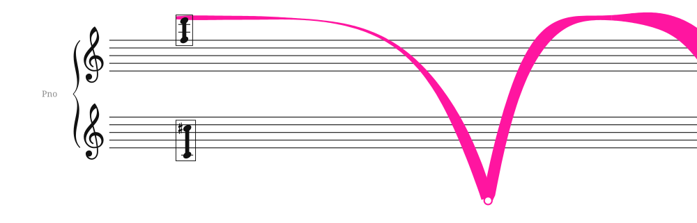
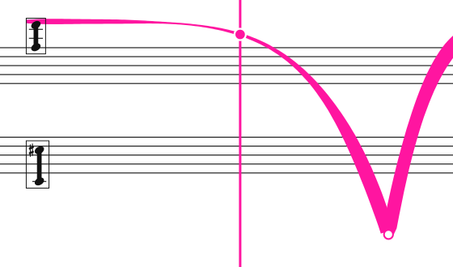
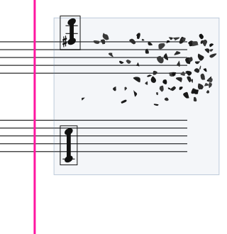
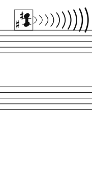

The score for Multiplicity is in a computer-animated digital format. It is accessed and played like an online video game through a web browser.
Dynamics are relative. Every note should be heard above the electronics. Within that, the marked dynamics keep their contrast: a p is quieter than an f, but a p is still audible over the electronics.
Demo Recording with Score-Following Video: [the YouTube link, after posting]
Flute, clarinet in B♭, alto saxophone, percussion, piano, violin, cello, electronics.
Percussion: spring coil, China cymbal, brake drums, bass drum (with rute for rim shot), crotales, glockenspiel. All other mallets are at the player's discretion.
The score is in C.
There are a number of animated conduction tools that are intuitive to follow and aid performers in realizing the score.
A scrolling cursor runs throughout the piece at a consistent speed and indicates when things are to be played. Notation is spaced proportionally in time — distance on the page equals duration.
Bouncing-ball conductors aid with rhythmic precision. Play at the precise moment of impact, using the ictus of the bouncing ball to inform the attack.
Gradient Curves: This score uses graphic curves to describe continuous change over time. Green curves describe continuous changes in volume: crescendo and decrescendo. Orange curves describe continuous changes in pitch: glissando. An animated curve follower appears alongside the cursor and gives the real-time position on the curve.
The electronics are fixed media, synced with the animated score.
The electronics play sine tones at specific pitches. Each player holds long tones against a sine tone and creates audible beating against it.
A useful analogy is how acoustic beating is commonly used to tune stringed instruments. You would play two strings that are slightly out of tune and then adjust the pitch of one of them very slightly until the beating disappears.
The sine tone generated by the electronics is represented by a purple line at the top of the lane. The orange curve represents beating speed, from unison with no beating at the bottom of the curve to maximum beating at the top. The maximum beating speed is at the player's discretion. The green curve represents volume. The notation header indicates the dynamic range. For example, ppp with an arrow to f means the volume change for that curve spans from ppp to f.
The dotted vertical lines are rearticulation points — the rearticulation should happen at the line: breathe or retake the bow before, and rearticulate at the line.
The bowed crotales hold their pitch. The sine tone changes pitch and creates beating against the held pitch of the bowed crotales.
The piano solo uses a form of action notation, using animation to describe playing action. The notation in a box before an action describes a cluster of notes, or a hand shape, to use for the action in either hand. The pianist uses the notes in the hand shape to execute the action.

Ribbon: a curved band that falls into a point of impact and rises out of it. Play a wave of notes into the impact and out again; the band's width is how busy the hand is.

Pebble drop: Produce a clustered impulse within a short time frame, like a handful of tossed pebbles hitting the ground.

Rapid-fire repeat: boxed keys followed by ripple marks. Repeat the boxed notes as a quick, rapid-fire stutter for the length of the marks.

The final section of the piece consists of a steady pulse and rapidly changing tempos. The pulse you are playing in is marked with hashes at the top of the staff, and the animated bouncing ball provides a conducted pulse to assist with accelerations, decelerations, and rapidly changing tempos.